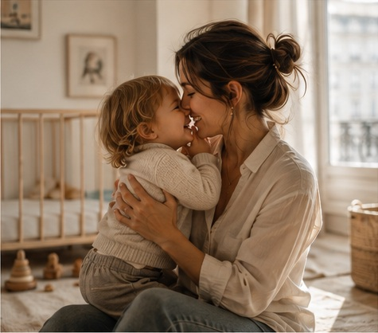
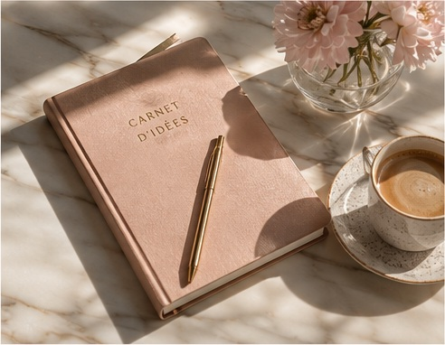

Est-ce qu'il existe vraiment un bon moment pour avoir un enfant ?
Carrière, stabilité, couple, envie, peur de perdre sa liberté... Pourquoi une question aussi intime finit-elle par ressembler à une décision stratégique ?
Carrière, couple, enfants, argent, féminité : il n'existe pas une seule façon de réussir sa vie.
Un média pour parler sans filtre des choix, des contradictions et des grandes questions qui accompagnent nos vingt et trente ans.

Carrière, stabilité, couple, envie, peur de perdre sa liberté... Pourquoi une question aussi intime finit-elle par ressembler à une décision stratégique ?

On peut vouloir une grande carrière et une famille. Être indépendante et aimer être entourée. Vouloir gagner beaucoup d'argent et avoir du temps. Changer d'avis. Ne pas tout savoir à 25 ans. Et surtout, décider soi-même de ce que signifie réussir.
Chaque mois, une femme raconte sa trajectoire sans version parfaitement maîtrisée : son rapport à l'ambition, l'argent, l'amour, la maternité, les compromis, les regrets et les choix dont elle est fière.
Découvrir son histoire →Une petite phrase devenue une conviction : une femme n'est jamais « ratée » parce qu'elle ne correspond pas au rôle qu'on avait imaginé pour elle.